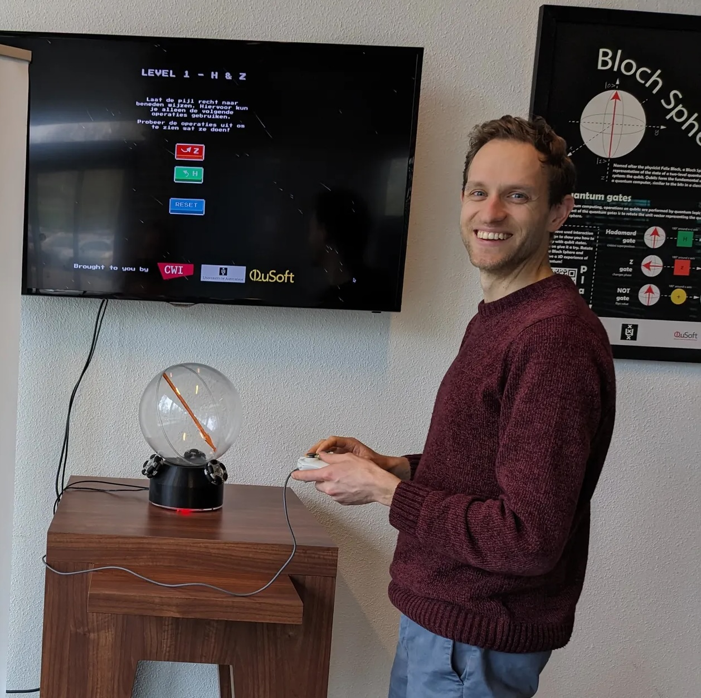

To get the most out of your Bloch Sphere, connect it to your computer and choose an engaging game or thought-provoking puzzle.

Puzzle your way through 4 different levels, where you must orient the Sphere to the desired direction using a limited set of gates. Requires locally running a Python app, which starts a game in your browser.
Open the QX Orb manual → ◕Learn about the basics of quantum, and solve the puzzles by collecting coins and avoiding forbidden areas. Runs straight in the browser — nothing to install.
blochfish.netlify.app ↗ +Built something for the Orb? We'd love to list it here. Check the building documentation to see how the interface works, then open an issue or pull request — or just get in touch.
Contribute on GitHub ↗The simplest option: link the Orb to your computer; make sure your USB cable supports data transfer (not charge-only).
Some units can be controlled wirelessly over Bluetooth. More info soon.
Power comes over USB-C, from either a wall adapter or a power bank.
The ball can rotate a little more or less than intended. A small drift is unavoidable, so after many gates you'll need to re-set the ball to its starting position by hand.
M5Stack CoreS3 build, LVGL touchscreen UI. Source and release notes live in the repository.
Some units (e.g. the CWI Orb) are wired left-handed — run games with --invert-y-axis.
Past hardware and firmware revisions are tracked in the Git history — browse tags and commits on GitHub.